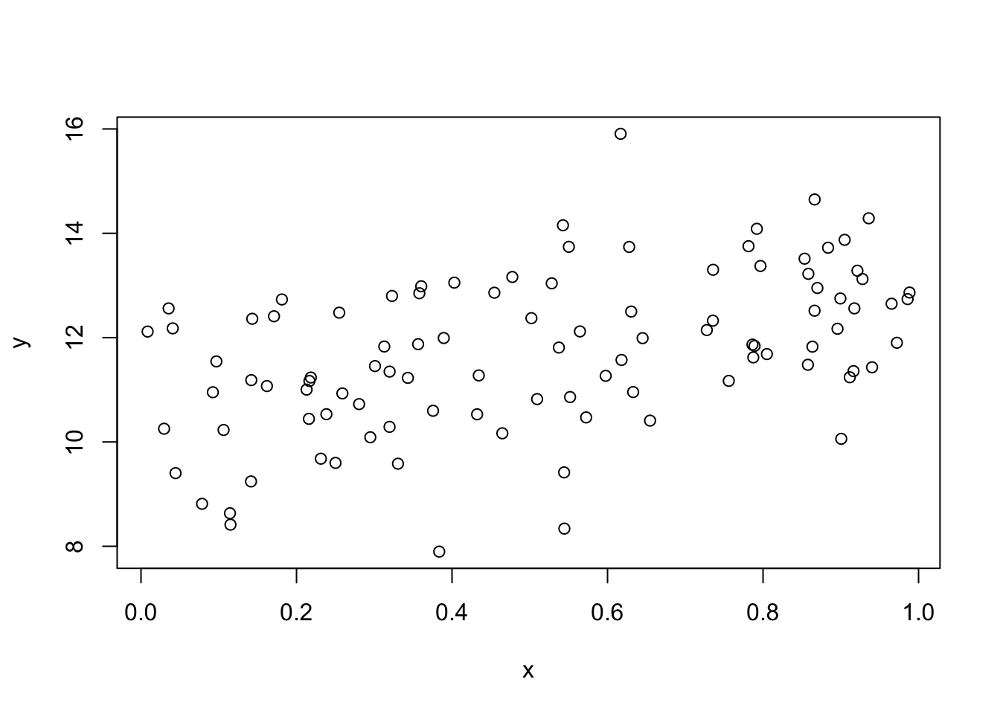

8 現代的仮定のもとでの最小二乗法
前節において以下の仮定を置いていた.
- \((x_i,y_i)\) は独立同一分布にしたがう.
- \(E[u_i]=0\) である.
- \(u_i\) と \(x_i\) は独立である.
- \(u_i\) は正規分布にしたがう.
これらの仮定を緩めることで分析にどのような影響をあたえるのかを見ていく.
仮想的に以下のモデルを考える.
N <- 100
x<-runif(N)
w<-sample(c("H","T"),N,replace=TRUE)
y <- 10 + 2*x + ifelse(w=="H",1,0) + rnorm(N)
df <- data.frame(w,x,y)作図すると以下である.

8.1 正規性の仮定について
十分な観測値が得られるばあい, \(u_i\) が正規分布にしたがっていないくても, 中心極限定理定理より, 最小二乗法推定量は正規分布に近似できる.
ここの係数ゼロのティー検定について, ライブラリ AER を導入して coeftest を用いればよい.
##
## z test of coefficients:
##
## Estimate Std. Error z value Pr(>|z|)
## (Intercept) 11.37786 0.32826 34.6614 < 2.2e-16 ***
## x 1.00942 0.55555 1.8170 0.0692218 .
## wT -1.58957 0.46602 -3.4109 0.0006474 ***
## x:wT 1.41492 0.83255 1.6995 0.0892266 .
## ---
## Signif. codes: 0 '***' 0.001 '**' 0.01 '*' 0.05 '.' 0.1 ' ' 1ただ十分なデータのもとではティー値のままでもよい.
同様に複数制約の場合, エフ検定統計量に制約の数を乗じた統計量が
自由度が制約数のカイ二乗分布にしたがうことが知られている.
これをR で実施するには waldtest を用いればよい.
## Wald test
##
## Model 1: y ~ x
## Model 2: y ~ x * w
## Res.Df Df Chisq Pr(>Chisq)
## 1 98
## 2 96 2 19.739 5.174e-05 ***
## ---
## Signif. codes: 0 '***' 0.001 '**' 0.01 '*' 0.05 '.' 0.1 ' ' 1エフ検定も十分なデータのもとではそのままでよいであろう.
オプション test を付けなければエフ検定を実施する.
## Wald test
##
## Model 1: y ~ x
## Model 2: y ~ x * w
## Res.Df Df F Pr(>F)
## 1 98
## 2 96 2 9.8693 0.0001265 ***
## ---
## Signif. codes: 0 '***' 0.001 '**' 0.01 '*' 0.05 '.' 0.1 ' ' 1これは anova と同じである.
## Analysis of Variance Table
##
## Model 1: y ~ x
## Model 2: y ~ x * w
## Res.Df RSS Df Sum of Sq F Pr(>F)
## 1 98 133.82
## 2 96 111.00 2 22.822 9.8693 0.0001265 ***
## ---
## Signif. codes: 0 '***' 0.001 '**' 0.01 '*' 0.05 '.' 0.1 ' ' 1複数制約の検定としてLM検定というのもある. 制約付きの回帰分析を実行し, その残差を制約なしのモデルの説明変数に回帰する. その決定係数に観測数を掛けた統計量が自由どが制約の数のカイ二乗分布にしたがうことが知られている.
## [1] 3.568114e-30## [1] 18.2 誤差項と説明変数が独立の仮定について
また \(u_i\) と \(x_i\) は独立でなく, \(u_i\) と \(x_i\) が無相関という弱い条件のもとでも, 一致推定量であることが知られている. ただ不偏推定量は保証できない. また 線形推定量のなかで最小の分散とも言えない.5 また独立のときの標準誤差の推定量が一致推定量でない.
ただし, 別の分散のもとで正規分布に近似できることがしられている.6 つまり, 説明変数と誤差項が無相関であるが, 独立とまでは言い切れない場合, 最小二乗推定量を実行した際, 別の方法で分散を推定する必要がある. この別の分散をロバスト分散という.
R でロバスト分散を推定するにはパッケージ AER を導入するのが簡単である.
は次のコマンド coeftest を実行すればよい.
##
## t test of coefficients:
##
## Estimate Std. Error t value Pr(>|t|)
## (Intercept) 11.37786 0.40874 27.8362 < 2e-16 ***
## x 1.00942 0.64349 1.5687 0.12002
## wT -1.58957 0.51039 -3.1144 0.00243 **
## x:wT 1.41492 0.82973 1.7053 0.09138 .
## ---
## Signif. codes: 0 '***' 0.001 '**' 0.01 '*' 0.05 '.' 0.1 ' ' 1先の値と標準誤差が違っていることが確認できるであろう. ただこの値は STATA と少し異なっている. STATA と同じにするには
##
## t test of coefficients:
##
## Estimate Std. Error t value Pr(>|t|)
## (Intercept) 11.37786 0.38962 29.2023 < 2.2e-16 ***
## x 1.00942 0.61216 1.6489 0.102427
## wT -1.58957 0.49009 -3.2434 0.001625 **
## x:wT 1.41492 0.79435 1.7812 0.078038 .
## ---
## Signif. codes: 0 '***' 0.001 '**' 0.01 '*' 0.05 '.' 0.1 ' ' 1としなければならない.
またティー分布でなく正規分布とすることもできる.
##
## z test of coefficients:
##
## Estimate Std. Error z value Pr(>|z|)
## (Intercept) 10.50954 0.28001 37.532 < 2.2e-16 ***
## x 1.76596 0.44799 3.942 8.082e-05 ***
## ---
## Signif. codes: 0 '***' 0.001 '**' 0.01 '*' 0.05 '.' 0.1 ' ' 1複数の係数についての検定は waldtest を実行すればよい.
## Wald test
##
## Model 1: y ~ x
## Model 2: y ~ x * w
## Res.Df Df F Pr(>F)
## 1 98
## 2 96 2 8.3186 0.0004659 ***
## ---
## Signif. codes: 0 '***' 0.001 '**' 0.01 '*' 0.05 '.' 0.1 ' ' 1先の結果はエフ検定であるが, カイ二乗検定を実施するには以下を実施すればよい.
## Wald test
##
## Model 1: y ~ x
## Model 2: y ~ x * w
## Res.Df Df Chisq Pr(>Chisq)
## 1 98
## 2 96 2 16.637 0.0002439 ***
## ---
## Signif. codes: 0 '***' 0.001 '**' 0.01 '*' 0.05 '.' 0.1 ' ' 18.3 分散均一の検定
誤差項が説明変数と独立のときと無相関のときでは標準誤差の推定量が異なる. 正確にいうと, 条件付き分散が説明変数に依存するかどうかによって標準誤差の推定量が異なる. このことは分散均一と呼ばれている.
誤差項の分散が均一かどうかは検定可能である. 有名な検定方法としてBP (Breusch-Pagan) 検定というものがある. BP検定は帰無仮説が分散均一で, 対立仮説が分散が説明変数と線形関係になっている場合の検定である.
残差の自乗を被説明変数として回帰分析をおこない, その決定係数に観測数をかけたものが検定統計量となる.
## [1] 2.680225## [1] 0.4435983ここでの例ではP値が5%を超えているので帰無仮説を棄却できないので, 分散均一を仮定してよいことが示唆されている.
R では以下のように実施すればよい.
##
## studentized Breusch-Pagan test
##
## data: fm1
## BP = 2.6802, df = 3, p-value = 0.4436これまでのBPテストは誤差項の分散が説明変数の線形関係あることを暗黙に仮定している. 非線形性を考慮するために説明変数の二次項を導入した分散不均一性の検定をホワイト検定という. 説明変数が複数ある場合ホワイト検定は煩雑になるため, 被説明変数の予測値を使って計算することがある. そのときホワイトテストは以下で実施する.
wht <- lm(I(resid(fm1)^2)~fitted(fm1)+I(fitted(fm1)^2),data=df)
(wht <- nrow(df)*summary(wht)$r.squared)## [1] 4.08356## [1] 0.1297975ホワイト検定でも分散均一が示唆されている.
もしくは以下を実行する.
##
## studentized Breusch-Pagan test
##
## data: fm1
## BP = 4.0836, df = 2, p-value = 0.1298このように分散均一性は検定することが可能であるが, そもそも分散均一が疑われる場合は, ロバスト分散で推定するので十分であるため最近の実証分析ではこの検定は実施されない.